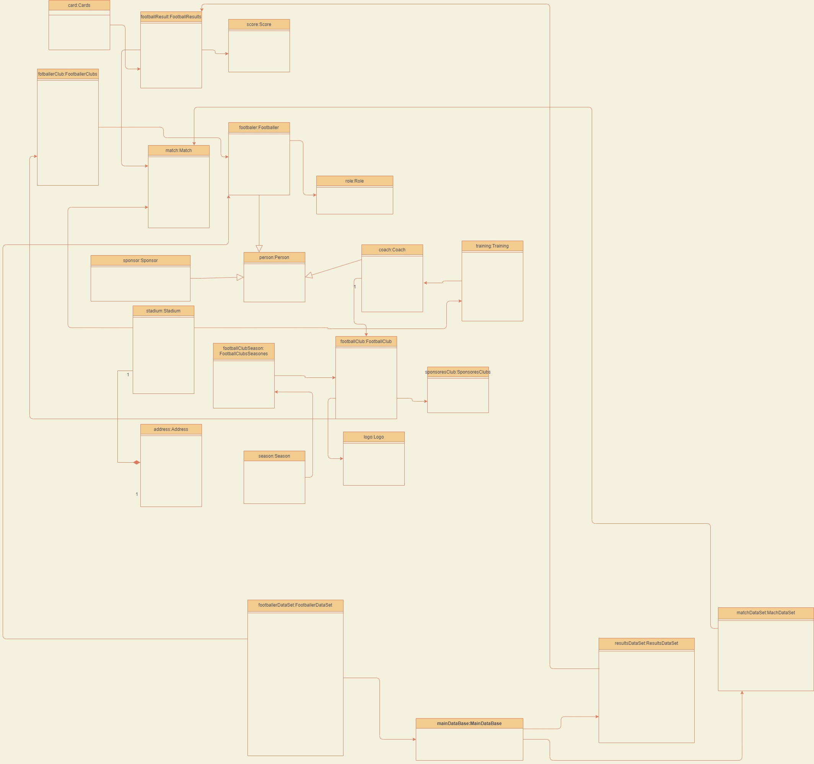

Опис об'єкта управління
Об’єктом автоматизації є система управління записами футбольної команди та отримання відомостей про успішність команди та окремо взятого футболіста.
Користувачем програми може бути вболівач команди, який перходить на сайт та переглядає інформацію про гравця, що його цікавить. Також корситувач може перейти на сторінку з матчами та отримати відомості про проведені матчі та їх результати. А також перглянути, які матчі будуть проводити якомога найближчим часом.
Коритсувачем системи може також бути адмінстратор бази даних, який авторизується в системі і може переглядати, додавати та оновлювати відомості про футболіста.
Також корисутвачем системи може бути аналітик бази даних, який може отримати іфнормацію у вигляді графіку з досягненнями в матчі окремого футболіста.
Мета розробки проекту
- Забезпечити зручне автоматизоване середовище для перегляду інформації про футболістів команди.
- Автоматизувати процес отримання графіків з результатами для кожного футболіста.
- Пришвидшити роботу з обробки інформації адміністраторам бази даних, аналітикам, менеджерам футбольної команди.
- Надати зручний доступ вболівальниками команди про інформацію про матчі та окремих футболістів даної футбольної команди.
Бізнес-задачі
- Зберігання інформації про футболістів. ·
- Змінення та оновлення інформації про футболістів. ·
- Сортування для отримання інформації про футболістів, про команди, матчі, тренерів та отримання відфільтрованих результатів.
- Видалення інформації про футболістів. ·
- Отримання звіту про досягнення окремого футболіста. ·
- Отримання інформації про проведенні матчі. ·
- Порівняння результатів матчів.
Бізнес-процеси
- Для зберігання інформації про футболістів вказати відомості про футболіста, що включають: ім’я, прізвище, дата народження, роль футболіста в команді, команду до якої він відноситься.Зберегти інформацію в системі.
- Оновити вказану при створенні інформацію про футболіста. Вказати та змінити лише необхідну інформацію про футболіста. В результаті оновленні дані будуть записані в систем
- Якщо інформація про даного футболіста не потрібна для збереження в системі, то її можна видалити.
- Cортування для отримання інформації про футболістів, про команди, матчі, тренерів та отримати відфільтровані результати.Вказати поле по якому потрібно проводити фільтрування.Натиснути пошук і автоматично отримувати результати.
- Порівняти результати матчів та отримати результати про них.Ввести початкову дату Ввести кінцеву дату. Опціонально вказати фільтр для сортування по зростанню або спаданню результатів матчу. Отримати результат у вигляді порівняльної таблиці.
- Отримати звіт про досягнення окремого футболіста.Обрати футболіста графік результату якого повинен бути відображений.Перейти на детальну сторінку з футболістом.Система автоматично генерує результати у вигляді графіку для окремого футболіста.
Сценарії дії системи
Користувач
- 1. Користувач виконує вхід до системи
- 2. Користувач отримує доступ до інформації про футбольну команду, учасників футбольної команди, проведених матчів та тренерів.
- 3. Користувач переходить по сторінці футбольних команд, вводить назву команди і отримує відфільтровані дані.
- 4. Користувач переходить по сторінці з матчами, опціонально вводить початкову та кінцеву дату проведення матчу. Вказує сортування за яким будуть відображатись матчі.Користувач отримує інформацію про матчі та їх результати за сформованим запитом. За замовчуванням система буде відображати результати матчу, що проводились якомога раніше.
- 5.Користувач переходить на сторінку з футболістами та отримує коротку відомості для кожного учасника цієї футбольної команди.
Адміністратор
- 1. Адміністратор виконує вхід до системи
- 2. Отримує доступ до бази даних
- 2.1. Працює із даними футболістів
- 2.2. Додає, видаляє та оноалює існуючі записи
- 3. Підверджує впроваджені зміни
Аналітик
- 1. Аналітик виконує вхід до системи
- 2. Переходить на детальну сторінку для окремого футболіста
- 2.1. Отримує результати у вигляді відомостей графіків з результатами по цьому гравцю
- 2.2. Отримує детальну інформацію, що може включати його дату народження, коротку біографію, зображення та деякі інші відомості
- 3. Аналізує отримані відомості
Таблиця обґрунтування класів
Насамперед потрібно зауважити, що система потребує додаткові класи для збереження даних, які будуть реалізовуватися у вигляді репозиторіїв або класів, що згодом будуть взаємодіяти з базою даних, тому результуюча діаграма класів матиме більше класів, ніж це зазначено при об’єктно-орієнтованій декомпозиції.
Таблиця обґрунтування методів
Діаграма об'єктів
Функціональні вимоги замовника - UML-діаграми
Діаграма класів
Моделювання системи автоматизації управління відомостями футбольної команди Діаграма класів для проекту "Системи автоматизації управління відомостями футбольної команди". Було створено 12 класів та побудовані зв'язки між ними:
- FootballResults - Clubs — композиція, так як отриманні картки є складовою результату матчу
- FootballResults - Score — композиція, так як набрані голи є складовою результату матчу
- FootballResults -Footballer - композиція,так як футбольні результати залежать від футболіста.
- FootballResults -Footballer - композиція,так як футбольні результати залежать від футболіста.
- FootballerClubs - Footballer —агрегація,так як відношення футбольних клубів і футболістів не залежить від наявності окремо взятого футболіста.
- FootballerClubs - FootballClub —композиція,так як відношення футбольних клубів залежить від самих футбольних клубів.
- FootballResults-Match - композиція,так як футбольні результати залежать від матча.
- Footballer -Role - агрегація так як ролі можуть існувати без футболіста. Так само футболіст може поки що не мати ролі в команді.
- Person-Footballer - наслідування, так як футболіст і є особою і має всі його атрибути і методи.
- Person-Coach - наслідування, так як тренер і є особою і має всі його атрибути і методи.
- Person-Sponsor - наслідування, так як спонсор і є особою і має всі його атрибути і методи.
- Stadium-Address -композиція, так як стадіон не може існувати без адреси.
- Season-FootballClubsSeasones - коспозиція, так як сезони є частоною відношення футбольні клуби і сезони.
- Season-FootballClub - композиція, так як сезони є частоною відношення футбольні клуби і сезони.
- Logo-FootballClub - агрегація, так як футбольні команди можуть існувати без логотипів.
- SponsoresClubs-FootballClub - агрегація, так як спонсори не залежать від футбольних клубів.
- Coach-Training - композиція, так як тренування не може проводитись без тренера.
- Training-Stadium -агрегація, так як тренування не обов'язково має проводити на стадіоні.
- FootballerDataSet-SponsoresClubs-агрегація, так як спонсори можуть існувати без бази даних.
- ResultsDataSet-Results-агрегація, так як результати матчу можуть існувати без бази даних.
- MachDataSet-Matches-агрегація, так як матчі можуть існувати без бази даних.
Висновок: в ході виконання даноъ лаборатоноъ роботи я навчилась виконуватидетальний опис предметного середовища, формулювати мету розробки проекту, бізнес-задачі, бізнес-процеси, сценарій дій системи. Здійснити Об’єктно-орієнтовний аналіз та проектування. А також ознайомилась та застосувала на практиці інфкапсуляцію,з поняттями класів, екземплярів класу. Провела об'єктно-орієнтовний аналіз та проектування програмт. Також викорситала для проектування графічне подання у вигляді діаграми класів, варіантів використання та діаграми об'єктів.
Файл проекту